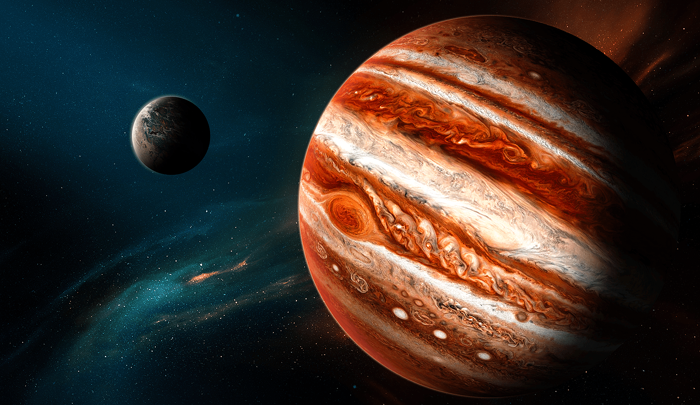
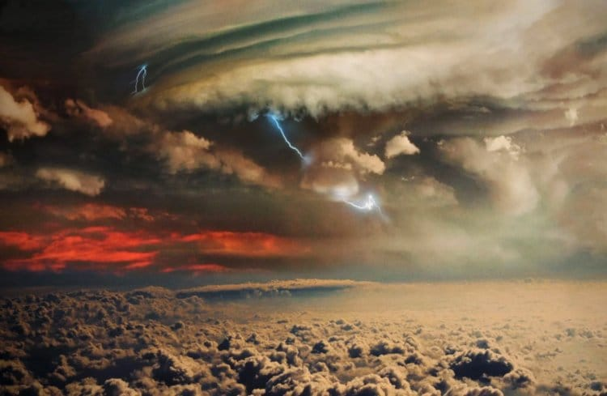
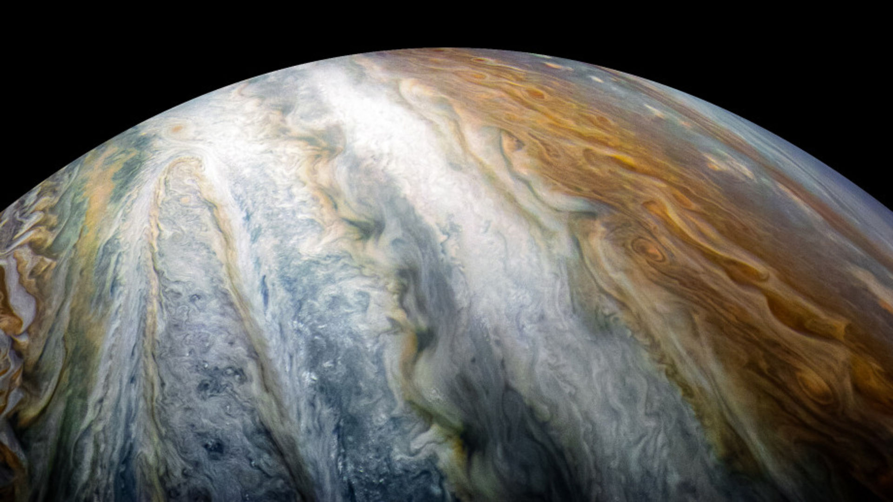
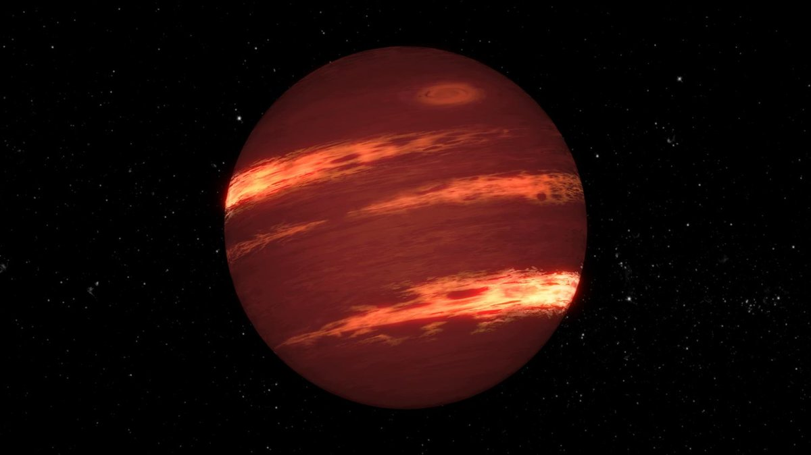
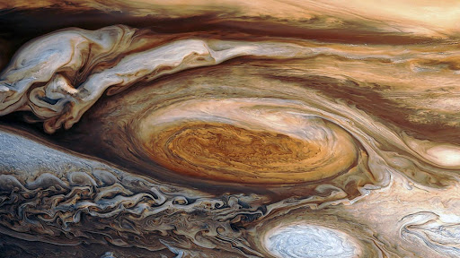
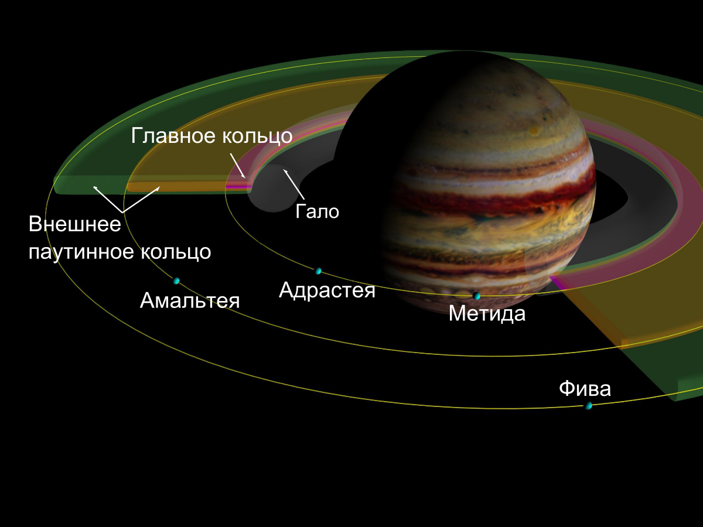

Юпитер
×
Юпитер — крупнейшая планета Солнечной системы, пятая по удалённости от Солнца. Наряду с Сатурном, Ураном и Нептуном, Юпитер классифицируется как газовый гигант.Перейти к разделу «Юпитер среди планет Солнечной системы.
Планета была известна людям с глубокой древности, что нашло своё отражение в мифологии и религиозных верованиях различных культур: месопотамской, вавилонской, греческой и других. Современное название Юпитера происходит от имени древнеримского верховного бога-громовержца.Перейти к разделу «Название и история изучения».
Ряд атмосферных явлений на Юпитере: штормы,Перейти к разделу «Движение атмосферы» молнии,Перейти к разделу «Молнии» полярные сияния,Перейти к разделу «Полярные сияния на Юпитере» — имеет масштабы, на порядки превосходящие земные. Примечательным образованием в атмосфере является Большое красное пятно — гигантский шторм, известный с XVII века.Перейти к разделу «Большое красное пятно».
Юпитер имеет, по крайней мере, 79 спутников, самые крупные из которых — Ио, Европа, Ганимед и Каллисто — были открыты Галилео Галилеем в 1610 году.Перейти к разделу «#Спутники и кольца».
Исследования Юпитера проводятся при помощи наземных и орбитальных телескопов; с 1970-х годов к планете было отправлено 8 межпланетных аппаратов НАСА: «Пионеры», «Вояджеры», «Галилео», «Юнона» и другие.Перейти к разделу «Изучение Юпитера космическими аппаратами».
Во время великих противостояний (одно из которых происходило в сентябре 2010 года) Юпитер виден невооружённым глазом как один из самых ярких объектов на ночном небосклоне после Луны и Венеры.Перейти к разделу «Орбита и вращение» Диск и спутники Юпитера являются популярными объектами наблюдения для астрономов-любителейПерейти к разделу «Любительские наблюдения», сделавших ряд открытий (например, кометы Шумейкеров-Леви, которая столкнулась с Юпитером в 1994 году,Перейти к разделу «Столкновения небесных тел с Юпитером» или исчезновения Южного экваториального пояса Юпитера в 2010 году)Перейти к разделу «Полосы».

Атмосфера
×
Четыре с половиной миллиарда лет назад наше Солнце еще не было такой яркой звездой, как сегодня. Оно было компактное и очень, очень горячее, но все же еще не достигло критической плотности и температуры, необходимых для поддержания ядерного синтеза в его ядре.
И, пока Солнце было на этой эмбриональной стадии, планеты начали свое медленное вальсирующее формирование. Ближе к юной звезде жара и света хватало, чтобы в этих областях оставался только каменистый материал: лед испарился, а различные газы, такие как водород и гелий, просто улетели вглубь молодой Солнечной системы. Оставшимся каменистым кускам ничего не оставалось, как медленно слипаться под действием гравитации, образуя все более крупные сгустки.
В конце концов, по прошествии достаточного количества времени (а у Вселенной возрастом больше 13 миллиардов лет свободного времени, очевидно, хватает), эти кусочки сформировали планетезимали, маленькие зародыши планет. Их было много, и это было довольно жестокое время для нашей Солнечной системы, поскольку эти планетезимали сталкивались, разрушались и преобразовывались бесчисленное количество раз. Наша собственная Земля тогда столкнулась с объектом размером почти с Марс, и обломки от этого удара в конечном итоге стали Луной.
Однако за пределами области, которая в конечном итоге стала поясом астероидов, формирование планет происходило по-другому. Там было достаточно холодно, чтобы лед мог «выжить», позволяя ядрам планет вырастать до огромных размеров за короткий промежуток времени.
Затем эти большие ядра с мощной гравитацией стали притягивать окружающий материал, в основном как раз водород и газообразный гелий, улетевшие из внутренней части Солнечной системы. В итоге эти миры стали окутываться плотной пеленой атмосферы — так и родились планеты-гиганты.

Полосы
×
Характерной особенностью внешнего облика Юпитера являются его полосы. Существует ряд версий, объясняющих их происхождение. Так, по одной из версий, полосы возникали в результате явления конвекции в атмосфере планеты-гиганта — за счёт подогрева и, как следствие, поднятия одних слоёв и охлаждения и опускания вниз других. Весной 2010 года учёными была выдвинута гипотеза, согласно которой полосы на Юпитере возникли в результате воздействия его спутников. Предполагается, что под влиянием притяжения спутников на Юпитере сформировались своеобразные «столбы» вещества, которые, вращаясь, и сформировали полосы.

Юпитер как «неудавшаяся звезда»
×
Теоретические модели показывают, что если бы масса Юпитера была намного больше его реальной массы, то это привело бы к сжатию планеты. Небольшие изменения массы не повлекли бы за собой каких-нибудь значительных изменений радиуса. Однако если бы масса Юпитера превышала его реальную массу в четыре раза, плотность планеты возросла бы до такой степени, что под действием возросшей гравитации размеры планеты сильно уменьшились. Таким образом, по всей видимости, Юпитер имеет максимальный диаметр, который могла бы иметь планета с аналогичным строением и историей. С дальнейшим увеличением массы сжатие продолжалось бы до тех пор, пока в процессе формирования звезды Юпитер не стал бы коричневым карликом с массой, превосходящей его нынешнюю примерно в 50 раз. Это даёт астрономам основания считать Юпитер «неудавшейся звездой», хотя неясно, схожи ли процессы формирования таких планет, как Юпитер, с теми, что приводят к формированию двойных звёздных систем. Хотя для того, чтобы стать звездой, Юпитеру потребовалось бы быть в 75 раз массивнее, самый маленький из известных красных карликов всего лишь на 30 % больше в диаметре.

Большое красное пятно
×
Большое красное пятно — овальное образование изменяющихся размеров, расположенное в южной тропической зоне. Было открыто Робертом Гуком в 1664 году. В настоящее время оно имеет размеры 15×30 тыс. км (диаметр Земли ~12,7 тыс. км), а 100 лет назад наблюдатели отмечали в 2 раза бо́льшие размеры. Иногда оно бывает не очень чётко видимым. Большое красное пятно — это уникальный долгоживущий гигантский ураган, вещество в котором вращается против часовой стрелки и совершает полный оборот за 6 земных суток.
Благодаря исследованиям, проведённым в конце 2000 года зондом «Кассини», было выяснено, что Большое красное пятно связано с нисходящими потоками (вертикальная циркуляция атмосферных масс); облака здесь выше, а температура ниже, чем в остальных областях. Цвет облаков зависит от высоты: синие структуры — самые верхние, под ними лежат коричневые, затем белые. Красные структуры — самые низкие. Скорость вращения Большого красного пятна составляет 360 км/ч. Его средняя температура составляет −163 °C, причём между окраинными и центральными частями пятна наблюдается различие в температуре порядка 3–4 градусов. Это различие, как предполагается, ответственно за тот факт, что атмосферные газы в центре пятна вращаются по часовой стрелке, в то время как на окраинах — против. Также выдвинуто предположение о взаимосвязи температуры, давления, движения и цвета Красного пятна, хотя как именно она осуществляется, учёные пока затрудняются сказать.

Спутники и кольца
×
По данным на июль 2018 года, у Юпитера известно 79 спутников — второе значение среди планет Солнечной системы после Сатурна. По оценкам, спутников может быть не менее сотни. Спутникам даны в основном имена различных мифических персонажей, так или иначе связанных с Зевсом-Юпитером. Спутники разделяют на две большие группы — внутренние (8 спутников, галилеевы и негалилеевы внутренние спутники) и внешние (71 спутник, также подразделяются на две группы) — таким образом, всего получается 4 «разновидности». Четыре самых крупных спутника — Ио, Европа, Ганимед и Каллисто — были открыты ещё в 1610 году Галилео Галилеем. Открытие спутников Юпитера послужило первым серьёзным фактическим доводом в пользу гелиоцентрической системы Коперника.